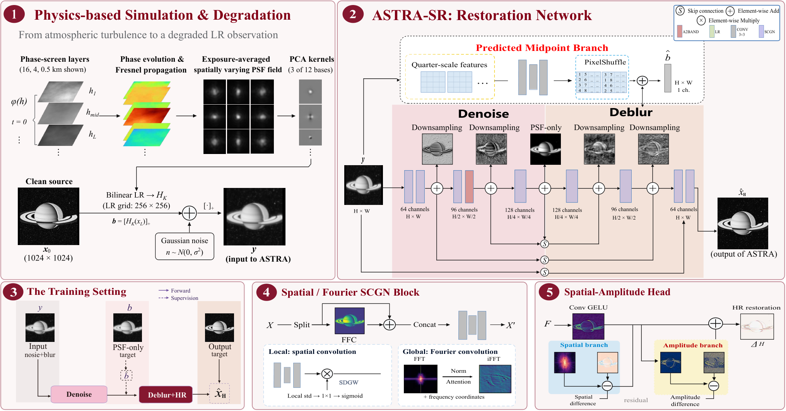
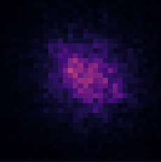
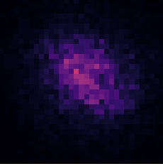
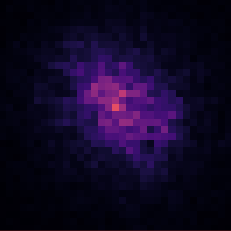
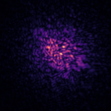
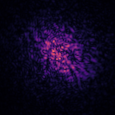
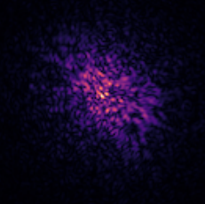
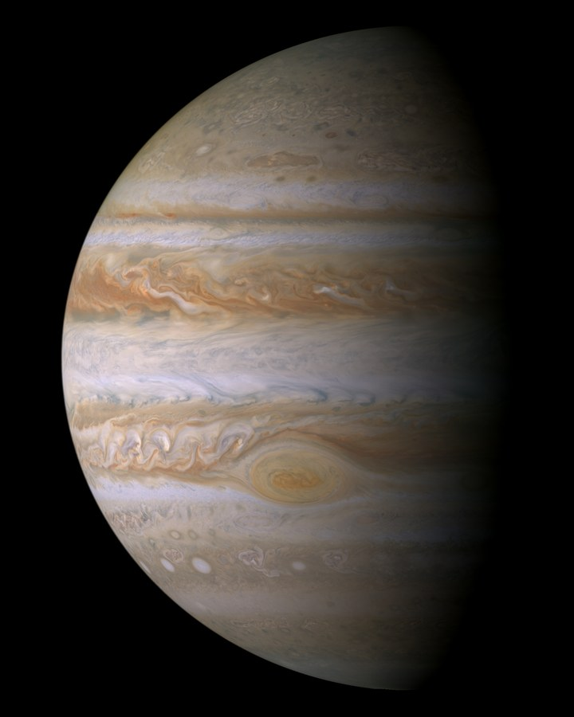

Abstract
Spatially varying optical blur and measurement noise obscure astronomical structure, while naive super-resolution can amplify the very artifacts it was meant to remove.
ASTRA-SR is an asymmetric spatial-frequency network for single-channel restoration and twofold super-resolution. A simulated blur-only intermediate target connects an early signal-purification stage to a later detail-reconstruction stage: the network first learns what noise looks like when the blur is removed, then rebuilds spatial detail. The architecture combines half-scale band adaptation (A2BAND), spatial reconstruction over a multiscale SCGN backbone, and local Fourier refinement, followed by sequential spatial and amplitude residuals in the R1-SF upsampling head.
Training and evaluation follow a frozen, physics-based protocol: clean sources curated from NASA/ESA Cassini ISS RAW observations are degraded with turbulence strengths sampled at six altitudes {0.5, 1, 2, 4, 8, 16} km from real MASS observation records, propagated through moving phase screens into spatially varying PSF fields, plus Gaussian sensor noise. On 1,355 validation images the released control model reaches 35.824 dB PSNR, 0.849 SSIM and 32.148 dB object-PSNR — above the strongest baseline — while matched ablations show small or metric-dependent component gains, which we report as measured rather than rounded up. Inference is fully blind: one degraded image in, one restored image out.
Results
Full evaluation evidence1,355 validation images, single seed, fixed epoch-20 selection — the exact protocol and hashes ship with the repository.
| Method | PSNR ↑ | SSIM ↑ | Obj-PSNR ↑ |
|---|---|---|---|
| StarIR (TPAMI’26), strongest baseline | 35.568 | 0.844 | 31.553 |
| ASTRA-SR (CONTROL) | 35.824 | 0.849 | 32.148 |
| Δ over baseline | +0.256 | +0.005 | +0.595 |
Compact viewer built from the paper’s original per-target assets (arXiv Fig. 4 sources, 512×512 mains + native ROI crops). Teal/purple boxes match the ROIs used across all methods. Real Jupiter and Moon have no reference — these are genuine frames, not synthetic pairs.
Method
Purify first, then rebuild the detail. The network is asymmetric by design: an early stage at the original scale removes sensor noise, a midpoint block learns a blur-only intermediate image, and a later stage rebuilds structure across scales before the head upsamples with separate spatial and amplitude residuals.

configs/CONTROL.json.- 01
Purify the signal
A single signal-aware A2BAND adaptation at the stem works at half scale, stripping sensor noise before fine structure is touched.
- 02
Supervise the middle
A simulated blur-only target anchors the midpoint representation, so deblurring and detail reconstruction are learned in sequence rather than entangled.
- 03
Refine spectra, then upsample
Patch-Fourier refinement plus sequential spatial and amplitude residuals in the R1-SF head rebuild the 512×512 frame with amplitude-aware gains bounded by design.
Dataset
Open the dataset cardA benchmark built from real sky: 400k collected Cassini ISS RAW frames curated into ~20k clean sources, degraded with real MASS turbulence statistics.
Six phase-screen layers at 0.5–16 km altitudes use turbulence records from the ESO Multi-Aperture Scintillation Sensor (MASS). Exposure-averaged, spatially varying PSF fields are built from a mean kernel plus 12 PCA basis kernels, then combined with Gaussian read noise.
Every sample ships six aligned arrays — clean_hr512, clean_lr256, degraded_lr256, noise_map, noise_only, psf_only — so the degradation intermediates can be studied or re-simulated. Splits are disjoint by source, and every archive carries a SHA-256.






PSF kernels at field positions A / B / C, 33×33 (sensor bins) and fine-sampled 132×132 — cropped cell-by-cell from the paper figure (arXiv Fig. 2).
Ablations
arXiv Tab. 2Matched module-removal ablations, trained from scratch for 20 epochs under the same optimization settings. Δ is computed from unrounded PSNR values.
| Dimension | Variant | PSNR ↑ | Δ (dB) |
|---|---|---|---|
| Full model | ASTRA-SR full model | 35.824 | – |
| LR estimation | w/o frequency-band adapter | 35.734 | 0.090 |
| w/o intermediate LR supervision | 35.719 | 0.105 | |
| LR restoration | w/o dilated branches | 35.713 | 0.112 |
| w/o Patch-Fourier refiner | 35.739 | 0.085 | |
| w/o local residual gain | 35.733 | 0.091 | |
| HR reconstruction | w/o spatial branch | 35.742 | 0.082 |
| w/o amplitude branch | 35.411 | 0.413 | |
| w/o both branches | 34.940 | 0.885 |
arXiv Tab. 2, transcribed cell by cell — the amplitude branch carries the largest single-module drop (Δ = 0.413 dB); removing both HR branches loses 0.885 dB.

BibTeX
@misc{ge2026astra,
title = {ASTRA-SR: Atmospheric Seeing and Turbulence Restoration
for Astronomical Image Super-Resolution},
author = {Ge, Xining and Cui, Ziteng and Liu, Shuhong},
year = {2026},
eprint = {2609.26731},
archivePrefix = {arXiv},
primaryClass = {cs.CV},
url = {https://arxiv.org/abs/2609.26731}
}